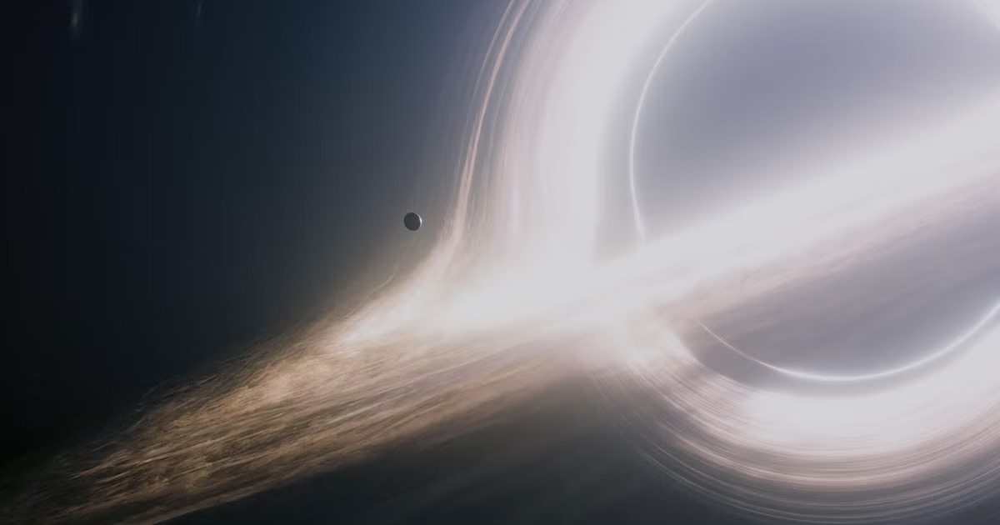

Interstellar is a visually stunning and emotionally profound sci-fi epic directed by Christopher Nolan, known for its ambitious storytelling and thought-provoking themes about the nature of human existence and the universe.
Interstellar Plot Synopsis:
- Setting: Interstellar is set in a dystopian future where Earth is suffering from crop blight and a deteriorating environment, leading to a global food shortage.
- The Protagonist: Cooper, a former NASA pilot turned farmer, is recruited by Professor Brand to join a space mission to find a new habitable planet for humanity.
- The Wormhole: A mysterious wormhole near Saturn, believed to be created by an advanced alien civilization, is discovered, offering a potential gateway to habitable worlds in other galaxies.
- Space Odyssey: Cooper, along with a team of scientists and astronauts, embarks on a journey through the wormhole aboard the spacecraft Endurance, facing various challenges and revelations.
- Time Dilation: Due to the effects of relativity, time passes differently on the planets near the black hole they are exploring, leading to dramatic consequences for the crew's relationships and mission.
- Love Transcends Dimensions: Love is portrayed as a powerful force that transcends space and time, influencing the decisions and connections between characters, particularly Cooper's relationship with his daughter Murph.
- The Tesseract: In the climax, Cooper finds himself inside a tesseract near a black hole, where he can manipulate time and space to send a crucial message to his past self and alter the course of events.

- Human Survival: Ultimately, the mission aims to secure humanity's survival by finding a new home among the stars, highlighting themes of sacrifice, hope, and the indomitable spirit of exploration.
- Final Resolution: The film concludes with Cooper's sacrifice to ensure the success of the mission, leading to the colonization of a habitable planet and the eventual reunion of humanity.